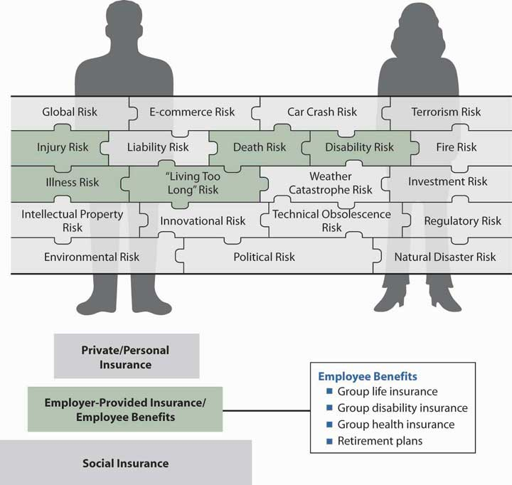

The mandatory benefits that employees obtain through the workplace—worker’s compensation, unemployment compensation, and Social Security—were discussed in earlier chapters. In this chapter we move into the voluntary benefits area of group insurance coverages offered by employers. We begin with an overall explanation of the employee benefits field and group insurance in this chapter. Our first step is to delve into the specific group benefits provided by employers through insurance or self-insurance. In addition to being regulated by the states as insurance products, employee benefits are also regulated by the federal government (under the Employee Retirement Income Security Act of 1974), especially when the employer self-insures and is not subject to state insurance regulation. Because many tax incentives are available to employers that provide employee benefits, there are many nondiscrimination laws and specific limitations on the tax advantages. Employee benefits are regulated by the Department of Labor and the Internal Revenue Service (IRS).
To ensure your clear understanding of the main features of employee benefits, this chapter includes a general discussion of group insurance. The second part of the chapter includes a discussion of group life, group disability, and cafeteria plans. Some federal laws affecting employee benefits, such as the Americans with Disabilities Act, the Age Discrimination in Employment Act, and the Pregnancy Discrimination Act, are also covered. Chapter 22 "Employment and Individual Health Risk Management" delves into the most expensive noncash benefit, health care coverage. All types of managed care plans will be discussed along with the newest program of defined contribution health care plans, the health savings accounts. Relating to health insurance are long-term care and dental care, also discussed in Chapter 22 "Employment and Individual Health Risk Management". Two important federal laws, the Health Insurance Portability and Accountability Act (HIPAA) of 1996 and the Consolidated Omnibus Budget Reconciliation Act (COBRA) of 1986, will also be explained in Chapter 22 "Employment and Individual Health Risk Management". Chapter 21 "Employment-Based and Individual Longevity Risk Management" is devoted to employer-provided qualified pension plans under the Employee Retirement Income Security Act (ERISA) of 1974 and subsequent reforms such as the Tax Reform Act of 1986 and the most recent Economic Growth Tax Reform and Reconciliation Act (EGTRRA) of 2001 (EGTRRA). Chapter 21 "Employment-Based and Individual Longevity Risk Management" also describes deferred compensation plans such as 403(b), 457, the individual retirement account (IRA), and the Roth IRA. We will focus on qualified retirement plans, in which the employer contributes on the employee’s behalf and receives tax benefits, while the employee is not taxed until retirement.
The field of employee benefits is a topic of more than one full course. Therefore, your study in this and the following two chapters, along with the employee benefits Case 2 of Chapter 23 "Cases in Holistic Risk Management", is just a short introduction to the field. This chapter covers the following:
At this point in our study, we are ready to discuss what the employer is doing for us in the overall process of our holistic risk management. Employers became involved in securing benefits for their employees during the industrial era, when employees left the security of their homes and families and moved to the cities. The employer became the caretaker for health needs, burial, disability, and retirement. As the years passed, the government began giving employers tax incentives to continue to provide these so-called fringe benefits. Today, these benefits are called noncash compensation and are very significant in the completeness of our risk management puzzle.
As noted in our complete risk management puzzle of Figure 20.1 "Links between Holistic Risk Pieces and Employee Benefits", we need to have coverage for the risks of health, premature death, disability, and living too long. These benefits and more are provided by most employers to their full-time employees. These types of coverage are the second step in the pyramid structure in the figure. Benefits offered by employers are critical in the buildup of our insurance coverages. As you will see in the next section of this chapter, there is no individual underwriting when we are covered in the group contract of our employer. As such, for some employees with health issues, the group life, disability, and health coverages are irreplaceable.
Two important federal laws will be discussed later in this chapter. COBRA provides for continuing health care coverage when an employee leaves a job or a breadwinner dies, and HIPAA enforces coverage for preexisting conditions when a person changes jobs. The reader can realize the enormous importance of this coverage in the holistic picture of risk management.
In our drill down into the specific pieces of the puzzle, we will again learn in this chapter that each risk is covered separately and that coverages from many sources protect each risk. It is up to us to pull together these separate pieces to provide a complete risk management portfolio. Whether the employer pays all or requires us to participate in the cost of the different types of coverage, the different coverages are important to consider and do not allow us a complete understanding of the holistic risk management process if they are not. Better yet, some of the benefits provide wonderful tax breaks that should be clearly recognized.
Figure 20.1 Links between Holistic Risk Pieces and Employee Benefits
In this section we elaborate on the general subject of noncash compensation to employees known as employee benefits:
Noncash compensation, or employee benefitsAll noncash compensation items sponsored by employers for their employees; includes group insurance, educational assistance, legal assistance, childcare, discounts, and so forth., today is a large portion of the employer’s cost of employment. The Employee Benefit Research Institute (EBRI), an important research organization in the area of employee benefits, reported that, in 2007, employers spent $1.5 trillion on major voluntary and mandatory employee benefit programs, including $693.9 billion for retirement programs, $623.1 billion for health benefit programs, and $138 billion for other benefit programs.Employee Benefit Research Institute, EBRI Databook on Employee Benefits, ch.2: Finances of the Employee Benefit System, updated September 2008. http://www.ebri.org. More information can also be found in the U.S. Chamber of Commerce Survey at uschamber.com at http://www.uschamber.org/Research+and+Statistics/Publications/Employee+Benefits+Study.htm (accessed April 12, 2009). The complete picture of employee benefits costs over the years is provided in Table 20.1 "Employer Spending on Noncash Compensation, 1960–2007" As you can see in this table, benefits make up a significant amount of the pay from employers, equating to 18.6 percent of total compensation in 2007. The largest shares of the benefits go toward legally required benefits (social insurance), paid leave, and health insurance.
Table 20.1 Employer Spending on Noncash Compensation, 1960–2007
| 1960 | 1970 | 1980 | 1990 | 2000 | 2007 | ||||||
|---|---|---|---|---|---|---|---|---|---|---|---|
| ($ billions) | |||||||||||
| Total compensation | $296.5 | $617.1 | $1,651.1 | $3,337.5 | $5,781.8 | $7,810.7 | |||||
Wages and salariesIncludes paid holidays, vacations, and sick leave taken. |
$272.8 | $551.5 | $1,377.4 | $2,754.0 | $4,829.8 | $6,355.7 | |||||
| Total benefits | $23.6 | $65.5 | $273.7 | $583.5 | $952.6 | $1,454.9 | |||||
| Retirement income benefits | $14.1 | $40.1 | $160.1 | $292.9 | $458.8 | $693.9 | |||||
| Social Security (OASDI) | $5.6 | $16.2 | $55.6 | $137.3 | $233.3 | $307.5 | |||||
| Private employers | $4.9 | $13.1 | $55.3 | $63.8 | $113.5 | $199.9 | |||||
| Public employers | $3.7 | $10.8 | $49.2 | $91.8 | $112.0 | $186.4 | |||||
| State and local governments | $1.8 | $5.1 | $19.1 | $33.0 | $39.6 | $69.2 | |||||
| Federal governments | $1.9 | $5.7 | $30.1 | $58.8 | $72.4 | $117.2 | |||||
| Civilian retirement | $0.8 | $2.0 | $15.9 | $28.7 | $41.3 | $54.3 | |||||
| Military retirement | $0.8 | $3.2 | $12.5 | $27.5 | $28.2 | $60.2 | |||||
| Railroad retirement | $0.3 | $0.5 | $1.7 | $2.6 | $2.9 | $2.7 | |||||
| Health benefits | $3.4 | $14.6 | $73.0 | $211.9 | $399.6 | $623.1 | |||||
| Medicare hospital insurance | $0.0 | $2.3 | $11.6 | $33.5 | $67.0 | $88.5 | |||||
| Group health insurance | $3.4 | $12.1 | $61.0 | $176.9 | $331.4 | $532.1 | |||||
Military medical insuranceConsists of payments for medical services for dependents of active duty military personnel at nonmilitary facilities. |
$0.0 | $0.2 | $0.4 | $1.5 | $1.2 | $2.5 | |||||
| Other benefits | $6.1 | $10.8 | $40.6 | $78.6 | $94.2 | $138.0 | |||||
| Unemployment insurance | $3.0 | $3.8 | $17.2 | $24.5 | $29.8 | $42.5 | |||||
| Workers’ compensation | $2.0 | $4.6 | $19.3 | $46.9 | $52.0 | $78.2 | |||||
| Group life insurance | $1.1 | $2.4 | $4.1 | $7.2 | $12.4 | $17.3 | |||||
© 2009, Employee Benefit Research Institute, reprinted with permission
Source: Employee Benefit Research Institute tabulations of data from the U.S. Department of Commerce, Bureau of Economic Analysis, National Income and Product Accounts of the United States. http://www.bea.doc.gov/bea/dn/nipaweb/index.asp.
For additional years of data, see EBRI’s Databook on Employee Benefits, chapter 2, which contains data in current dollars and inflation-adjusted dollars: http://www.ebri.org/pdf/publications/books/databook/DB.chapter%2002.pdf.
As noted above, employee benefits have tax incentives. Some benefits such as health care, educational assistance, legal assistance, child care, discounts, parking, cafeteria facility, and meals are deductible to the employer and completely tax exempt to the employees. Retirement benefits, both the contributions and earnings on the contributions, are tax deductible to the employer and tax deferred to the employees until their retirement. Some of the benefits paid by employees themselves are tax deferred, such as investment in 401(k) plans (discussed in Chapter 21 "Employment-Based and Individual Longevity Risk Management"). Other benefits are partially tax exempt, such as group life. The employee is not required to pay taxes on the cost of life insurance up to coverage in the amount of $50,000 in death benefits. For greater amounts of death benefits, the employer’s contributed premiums are counted as taxable income to the employee. The largest expense comes in the form of health benefits, with $532.1 billion out of $1,454.9 billion of the total benefits spent by employers in 2007 (see Table 20.1 "Employer Spending on Noncash Compensation, 1960–2007"). Health benefits receive the most favorable tax exemption of all employee benefit programs.
When we do not pay taxes, the government is forgoing income. Each year, the White House Office of Management and Budget calculates the amounts forgone by the tax benefits. EBRI reports that the foregone taxes from employer-provided benefits are projected to amount to $1.05 trillion for 2009 through 2013.Employee Benefits Research Institute, “Tax Expenditures and Employee Benefits: Estimates from the FY 2009 Budget,” February 2008, http://www.ebri.org/pdf/publications/facts/0208fact.pdf (accessed April 12, 2009).
With the tax incentives comes a very stringent set of rules for nondiscrimination to ensure that employers provide the benefits to all employees, not only to executives and top management. The most stringent rules appear in the Employee Retirement Income Security Act, which will be explored in Chapter 21 "Employment-Based and Individual Longevity Risk Management" in the discussion of pensions. Keep in mind that employee benefits are a balance of tax incentives as long as employers do not violate nondiscrimination rulesRules set forth by the IRS stipulating that employee benefit plans must be for the benefit of all employees, not just executives and top management in order to qualify for tax incentives. and act in good faith for the protection of the employees in their fiduciary capacity. The efforts to protect employees in cases of bankruptcies are featured in the box “Your Employer’s Bankruptcy: How Will It Affect Your Employee Benefits?” Ways to detect mismanagement of certain benefit plan funding are described in the box “Ten Warning Signs That Pension Contributions Are Being Misused.”
The first step in managing an effective employee benefits program, as with the other aspects of risk management discussed in Part I of the text, is setting objectives. Objectives take into account both (1) the economic security needs of employees and (2) the financial constraints of the employer. Without objectives, a plan is likely to develop incrementally into a haphazard program. An employer who does not have an on-staff specialist in this field would be wise to engage an employee benefits consulting firm.
Employers can use several methods to set objectives for benefit plans. They may investigate what other organizations in the region or within the industry are doing and then design a competitive package of their own to recruit and retain qualified employees. Benefits may be designed to compete with plans offered for unionized workers. Employers may survey employees to find out what benefits are most desired and then design the benefits package with employees’ responses in mind.
Employer objectives are developed by answering questions such as the following:
In answering questions like these, management must keep in mind the effect of its benefits decisions on the organization’s prime need to operate at an efficient level of total expenditures with a competitive product price. Efficiency requires management of total labor costs, wages plus benefits. Thus, if benefits are made more generous, this change can have a dampening effect on wages, all else being equal. Financial constraints are a major factor in benefit plan design. It is critical to note that health insurance is a key benefit employees expect and need. As shown in Table 20.1 "Employer Spending on Noncash Compensation, 1960–2007", group health insurance is a major part of the average compensation in the United States. Most people regard the employer as responsible to provide this very expensive benefit, which is discussed in detail in Chapter 22 "Employment and Individual Health Risk Management" (unless and until proposed changes are enacted by the Obama administration, that is).
In this section you studied the following general features of employee benefits and important considerations for employers:
In this section we elaborate on the following insurance aspects of employee benefits:
Individuals receive economic security from individually purchased insurance and from group insurance. Both types of coverage may provide protection against economic loss caused by death, disability, or sickness. To the covered person, the differences between the two types of coverage (shown in Table 20.2 "Comparison of Group Insurance and Individual Insurance") may not be noticeable.
Table 20.2 Comparison of Group Insurance and Individual Insurance
| Individual Insurance Contract | Group Insurance Contract | |
|---|---|---|
| Administration/contract | Issued to the person insured | Master contract issued to employer or a trust; each employee is issued a certificate of insurance (not a contract) |
| Underwriting | Evidence of insurability | Characteristic of the group to minimize adverse selection and administrative costs |
| Eligibility | At inception of contract | Related to employment periods |
| Experience rating/pricing | Experience of the insurance company | Experience of the large group |
The administration of group insurance differs from individual insurance because the contract is made with the employer rather than with each individual. The employer receives a master contractIn group insurance, document issued to employer describing all the terms and conditions of the group policy. that describes all the terms and conditions of the group policy. The employer, in turn, provides each insured employee with a certificate of insuranceProvided by employers to insured employees as evidence of participation in a group insurance plan. as evidence of participation. ParticipantsIn a group benefit plan may include employees; their dependents (including a spouse and children under a specified age, such as twenty-one, when enrolled in school); retirees; and their dependents. in the benefit plan may include employees, their dependents (including a spouse and children under a specified age, such as twenty-one, when enrolled in school), retirees, and their dependents. Participants receive a booklet describing the plan, distributed by the employer at the time the plan goes into effect or when eligibility begins, whichever is later.
Administration of group insurance also differs from individual insurance because the employer may be responsible for the record keeping ordinarily done by the insurer, especially if the group is large. Administration is simplified by the employer paying periodic premiums directly to the insurer. If employees are required to contribute toward the premium, the employer is responsible for collection or payroll deduction of employee contributions, as well as for payment to the insurer of the total group premium amount.
Many large employer plans are self-insuredWhen large employers with sufficient means pay claims in a group insurance arrangement and bear the risk that actual claims will exceed expected claims., and employers, rather than insurers, pay claims and bear the risk that actual claims will exceed expected claims. Some employers with self-insured plans also administer the benefits themselves. However, insurers and third-party administrators (TPAs)Unaffiliated party contracted to administer self-funded group insurance plans. administer many (even large) self-funded plans under an administrative services only (ASO)Arrangement under which an insurer or third-party administrator (TPA) handles record keeping and claim payment functions for employers sponsoring self-insured group insurance plans, who pay 5 to 10 percent of the normal premium for these services. contract. The employer transfers record keeping and claim payment functions to the insurer or TPA, paying about 5 to 10 percent of the normal premium for administrative services.
In addition, the employer may purchase stop-loss insuranceA form of reinsurance or excess insurance for self-insured group insurance plans whereby an insurer or third-party administrator (TPA) provides protection against unexpectedly high claims. from the same or another insurer through the TPA for protection against unexpectedly high claims. Stop-loss coverage is a form of reinsurance or excess insurance for self-insured plans. The two basic forms of coverage are specific stop lossStop-loss insurance for self-insured group insurance plans that provides a limit per claim above which the employer is not responsible., in which a limit is set per claim, and aggregate stop lossStop-loss insurance for self-insured group insurance plans that provides a limit on the total claims in a year for which the employer is responsible., in which a limit is set for the total claims in a year. The insurer reimburses the employer for claim amounts above the limit, also called the attachment point. Purchase of an ASO contract and stop-loss insurance gives the employer the potential cash flow and expense advantage of self-funding, while reducing the employer’s administrative burden and potential for catastrophic risk.
Individually purchased life and health insurance contracts involve individual underwriting. The purchaser files an application and, in some cases, takes a medical examination. On the basis of this and other information, the underwriter decides whether or not to issue insurance, and on what terms. The merits of each application are decided individually. Group underwritingDoes not involve an application to the insurer by each participant or a medical examination (except in some very small employer groups); the employer makes one application for the entire group, and, instead of selecting individual insureds, the insurer makes an underwriting decision based on group characteristics. does not involve an application to the insurer by each participant, or a medical examination (except in some very small employer groups). The group as a whole is being underwritten. The employer makes one application for the entire group and, instead of selecting individual insureds, the insurer makes an underwriting decision based on group characteristics.
It is imperative that the group was not created for insurance purposes. Insurance should be incidental to the group’s formation. Under state laws, the following are eligible groups for group insurance:
Some, mostly smaller, employers may have trouble finding an insurance carrier willing to service their group if one or more individuals are in ill health. Many of these firms, however, have access to group insurance by participating in a multiple-employer trust (MET). The MET makes available to small employers, often in the same industry group and with as few as one or two employees each, benefits similar to those available to large groups. METs are often organized for a trade association, union, or other sponsoring organization by an insurer or third-party administrator. When small employers come together through a MET to purchase insurance, they have access to group underwriting treatment, products, and services similar to those available to large employers.
Insurers prefer to work with firms that will exist from year to year and be able to pay the premium. Because the cash flow is very fast in group insurance such as health insurance, financial stability is critical to underwriters accepting the business. This requirement is really fundamental to all types of underwriting, not only group underwriting.
The Department of Labor’s Employee Benefits Security Administration (EBSA) administers the Employee Retirement Income Security Act (ERISA) of 1974, which governs retirement plans (including profit sharing and 401(k) plans) and welfare plans (including health, disability, and life insurance plans). ERISA also includes the health coverage continuation and accessibility provisions of the Consolidated Omnibus Budget Reconciliation Act (COBRA) and the Health Insurance Portability and Accountability Act (HIPAA).
EBSA educates and assists the nation’s 200 million participants and beneficiaries in pension, health, and other employee benefit plans and the more than 3 million sponsors of those plans. In carrying out its responsibility to protect participants’ and beneficiaries’ benefits, EBSA has targeted populations of plan participants who are potentially exposed to the greatest risk of loss. One such group of individuals is the group of participants and beneficiaries of plans whose sponsor has filed for bankruptcy. In such cases, EBSA provides the following.
If an employer declares bankruptcy, it will generally take one of two forms: reorganization under Chapter 11 "Property Risk Management" of the Bankruptcy Code or liquidation under Chapter 7 "Insurance Operations". A Chapter 11 "Property Risk Management" (reorganization) usually means that the company continues in business under the court’s protection while attempting to reorganize its financial affairs. A Chapter 11 "Property Risk Management" bankruptcy may or may not affect your pension or health plan. In some cases, plans continue to exist throughout the reorganization process. In a Chapter 7 "Insurance Operations" bankruptcy, the company liquidates its assets to pay its creditors and ceases to exist. Therefore, it is likely your pension and health plans will be terminated. When your employer files for bankruptcy, you should contact the administrator of each plan or your union representative (if you are represented by a union) to request an explanation of the status of your plan or benefits. The summary plan description will tell how to get in touch with the plan administrator. Questions that you may want to ask include the following:
This factor is important not only in accepting a group for coverage but also in pricing the group plan. Insurers look at past losses—the frequency, severity, and length of illnesses or disabilities—when deciding whether to accept a business and then how to price it. Pricing factors will be discussed later in this section.
As you recall from the first two chapters of this text, the law of large numbers is very important to the functioning of insurance. Therefore, large groups can be rated on their own experience, while small groups have to be rated based on the insurer’s experience with groups of similar type and size.
Insurance laws may require that a minimum percentage of the group be enrolled in the benefit plan to ensure that there are enough healthy employees and dependents to help offset the high claims that can be expected from unhealthy employees or dependents. Every group, insured or self-insured, can anticipate enrollment by the unhealthy. The likelihood of achieving minimum participation (meaning at least 75 percent) is increased by employer sharing of costsWhen an employer pays some portion of group insurance premiums; in group benefit plans where employees pay all or part of the premium amount, 75 percent of employees must participate to protect the plan from adverse selection.. Most states and insurers require that noncontributory plans, in which employees do not pay for the cost of their coverage, enroll 100 percent of employees. In contributory plans, where employees pay all or part of the premium amount, 75 percent of employees must participate. This helps protect the plan from adverse selection.
To avoid the problems associated with high employee turnover, employers use waiting periods or probationary periods before insurance coverage begins. There are some advantages to turnover, however; for one, the age composition does not get older when more new employees join the plan.
Group business is costly for the insurer in the first year. An employer that changes carriers every year is an undesirable client. Insurers look for a more permanent relationship with employers.
To avoid adverse selection, employers are required under nondiscrimination laws to offer the same benefits package to all employees. In reality, many groups provide flexible benefit programs, which allow employee input into the amount of each benefit, and supplemental plansSpecific, additional group insurance coverages and amount that employees can purchase on a fully contributory basis., which allow employees to purchase additional amounts of a specific benefit on a fully contributory basis. These options undoubtedly invite adverse selection, which is reflected in higher rates for flexible and supplemental benefits. However, given the diversity in needs among single, married, divorced, younger, older, male, and female employees in the typical group, the advantages of giving employees a voice in benefit decisions may well outweigh the cost of some adverse selection. Flexible benefit programs, also known as cafeteria plans, are discussed later in this chapter.
Supplemental plans allow employees to choose additional group insurance coverage paid for entirely by the employees themselves. For example, supplemental life coverage can allow an employee to increase the face amount of group life insurance coverage, and supplemental group disability coverage can allow for a cost-of-living benefit increase for periods of long-term disability. In recent years, the use of supplemental plans has grown, largely due to the flexibility they provide to employees at little or no cost to employers, other than facilitating the payroll deductions.
The potential for adverse selection may be greater with supplemental benefits than with nonsupplemental benefits. Because employees pay the premium for supplemental coverage, it is likely that those who anticipate that they need the benefit are more willing to participate. Despite this, supplemental plans are popular because they allow employees to tailor benefits to meet their individual needs through a convenient payroll deduction plan.
Generally, employees are first eligible for benefits either immediately upon hiring or following a three- to six-month probationary periodThree- to six-month period through which a newly hired worker must be employed before becoming eligible for group benefits.. Following hiring or the probationary period (whichever the employer requires), the employee’s eligibility periodTimeframe (usually thirty-one days) during which employees may sign up for group insurance coverage. usually extends for thirty-one days, during which employees may sign up for group insurance coverage. This period is called open enrollmentThe process of employees selecting group insurance coverage during the eligibility period.. In order for coverage to become effective, most group plans require that the employee be actively at work on the day that coverage would normally become effective. Being at work provides some evidence of good health and helps reduce adverse selection.
Enrollment after the eligibility period usually means that the employee will have to provide evidence of insurability. The employee may have to complete a questionnaire or have a medical examination to show that he or she is in good health. This provision helps reduce adverse selection. Most employers allow only full-time employees to participate in the benefit plan. (The definition of full-time differs from employer to employer; the minimum may be as low as twenty hours per week, but it is more often thirty-two to thirty-five hours). To lower adverse selection, part-time employees are not included (some part-time employees join the work force only for the benefits). Some employers provide minimal benefits for part-time employees, such as burial cost only instead of full death benefits.
The most important part of this requirement is to what extent the employer plans to help in the enrollment and claims process.
Some employers pay the entire cost of the group insurance premium. These are noncontributory plansPension plan funded only by employer contributions.. In contributory plansPension plan that requires the employee to pay all or part of pension fund contributions., employees pay part of the cost. Frequently, group life and disability insurance plans are noncontributory, but they require the employees to contribute if other family members are covered. Health insurance is more likely to be contributory because of rising premiums, a situation described in the box “What Is the Tradeoff between Health Care Cost and Benefits?” in Chapter 22 "Employment and Individual Health Risk Management". The employer makes the premium payment to the insurer; contributory amounts, if any, are deducted from the employee’s paycheck.
Important factors in underwriting for pricing are (1) the age and gender composition of the group, (2) the industry represented by the group, and (3) the geographical location of the group.
Group insurance is usually less expensive than individual insurance for several reasons: (1) with group coverage, the insurer deals with one insured instead of many, streamlining marketing costs; (2) the employer takes care of much of the administrative detail; (3) commission scales on group business are lower than they are on individual policies; (4) medical examinations are not needed because the employees are at least healthy enough to work; (5) the employer collects the premiums and pays the insurer in one lump sum, which is more efficient for the insurer; and (6) the employer often does some monitoring to eliminate false or unnecessary claims for health care benefits. In addition, group insurance theory maintains that the replacement by younger employees of employees who retire or quit keeps average mortality and morbidity rates from rising to prohibitive levels. That is, a flow of persons through the group tends to keep average costs down. This is often true when the number of employees in a group is growing, but it is less true for an organization that is downsizing.
Group life and health insurance rates are usually quoted by insurers as one monthly rate (e.g., $0.15 per $1,000 of coverage in the case of life insurance) for all employees. This rate is based on a weighted average, taking into account the age, sex, and accompanying mortality and morbidity rates for each employee in the group. Because mortality and morbidity rates increase with age, life insurance rates are quoted in age brackets. Someone in the thirty-one to thirty-five age bracket will pay slightly more than someone in the the twenty-six to thirty bracket. Thus, groups with a higher proportion of older people will have relatively higher premiums.
Most small organizations (e.g., those with fewer than fifty employees) have their entire premium based on pooled claims experience for similar-size firms. However, larger employers are likely to have experience-rated premiumsWhen a group’s own claims experience experience affects the cost of coverage for group insurance. in which the group’s own claims experience affects the cost of coverage, as described in Chapter 16 "Risks Related to the Job: Workers’ Compensation and Unemployment Compensation" for worker’s compensation. Experience rating allows employer groups to benefit directly from their own good claims experience, and it provides a direct economic incentive for risk managers to control claims.
With experience rating, the weight or credibility given to a group’s own experience increases with the number of participants. The experience of smaller groups (e.g., those with fewer than 500 or 1,000 employees) is not considered sufficiently statistically credible or reliable to determine premiums completely. Therefore, insurers use a weighted average of the group’s loss experience and the pooled experience for groups of similar size and characteristics in developing the claims charge. For example, the group’s actual loss experience may be weighted at 70 percent of the claims charge, and the pooled experience for groups of similar attributes may carry a weight of 30 percent. If the group had a loss experience of $80,000 and the pool experience was $100,000, then the claims charge for the experience-rated premium would be $86,000 per year. A larger group would have more statistically reliable experience and might receive an 80 percent weighting for its own experience and a 20 percent weighting for the pooled experience, resulting in a claims charge of $84,000. Thus, the larger the group, the more credit the group receives for its own claims experience. The experience-rated claims charge makes up the bulk of the total premium due, but the final experience-rated premium also includes administrative charges and fees.
Premiums for larger organizations, however, may reflect only the group’s own loss experience. With prospective experience rating, the group’s claims experience for the previous few years, plus an inflation factor, partly or completely determines the premium for the current year. A retrospective experience rating plan uses loss experience to determine whether premium refunds (or dividends) should be paid at the end of each policy year.
Group insurance premiums paid by the employer are a deductible business expense and are not taxable income to employees except for amounts of term life insurance in excess of $50,000 per person and all group property-liability insurance. Employee premium contributions are not tax deductible, except if they are allowed to be used in a cafeteria program under a premium conversion plan or flexible spending account (FSA), discussed later in this chapter. The other tax-sheltered accounts available under health savings account (HSA) plans are discussed in Chapter 22 "Employment and Individual Health Risk Management". Proceeds paid from group life insurance at death are not taxable income to the beneficiary, as noted in Chapter 19 "Mortality Risk Management: Individual Life Insurance and Group Life Insurance", but are included in the estate of the insured, if he or she is the owner, for federal estate tax purposes.
Group disability insurance (discussed in Chapter 22 "Employment and Individual Health Risk Management") premiums paid by the employer are also a deductible business expense for the employer, and they do not result in an immediate tax liability for the employee. If an employee receives disability benefits, the portion paid for by the employer is taxable to the employee. For example, if the employer pays one-third of the premium amount for disability coverage, and if the employee becomes disabled and receives benefits, one-third of the benefits are taxable income to the employee. Benefits attributable to coverage paid for by the employee with after-tax dollars are not taxable. Thus, in this example, two-thirds of the disability benefit amount would not be taxable income. Explaining taxation of disability income to employees can be a challenge for the benefits manager. However, many employers are successful in conveying the importance of after-tax premium payment to the level of benefits if disability occurs. The tax savings on the premiums are very small relative to the tax savings on the disability benefits.
Increasingly, employees are asked to make voluntary or mandatory contributions to retirement and other benefit plans. This is particularly true for 401(k) savings plans (as will be discussed in Chapter 21 "Employment-Based and Individual Longevity Risk Management"). These plans allow you to deduct from your paycheck a portion of pretax income every year, invest it, and pay no taxes on those contributions until the money is withdrawn at retirement.
An antifraud campaign by the Department of Labor uncovered a small fraction of employers who abused employee contributions by either using the money for corporate purposes or holding on to the money too long. Here are ten warning signs that your pension contributions are being misused.
If you think the plan trustees or others responsible for investing your pension money have been violating the rules, you should call or write the nearest field office of the U.S. Department of Labor’s Employee Benefits Security Administration (EBSA). The Labor Department has authority to investigate complaints of fund mismanagement. If an investigation reveals wrongdoing, the department can take action to correct the violation, including asking a court to compel plan trustees and others to put money back in the plan. Courts can also impose penalties of up to 20 percent of the recovered amount and bar individuals from serving as trustees and plan money managers.
If you suspect that individuals providing services to the plans have gotten loans or otherwise taken advantage of their relationship to the plan, the Employee Plans Division of the Internal Revenue Service may want to take a closer look. The Internal Revenue Service is authorized to impose tax penalties on people involved in unlawful party-in-interest transactions.
Cases of embezzlement or stealing of pension money, kickbacks, or extortion should be referred to the Federal Bureau of Investigation or the Labor Department field office in your area. If illegal activities are discovered, the case can be referred to the U.S. Department of Justice for prosecution. Criminal penalties can include fines or prison sentences, or both.
Federal pension law makes it unlawful for employers to fire or otherwise retaliate against employees who provide the government with information about their pension funds’ investment practices.
Sources: Portions reprinted from “10 Warning Signs,” U.S. Department of Labor, Employee Benefits Security Administration, http://www.dol.gov/ebsa/publications/10warningsigns.html, accessed April 12, 2009; “What You Should Know About Your Retirement Plan,” a handbook from the U.S. Department of Labor, at http://www.dol.gov/ebsa/publications/wyskapr.html, accessed April 12, 2009. This booklet is available online. You can find explanation of all qualified retirement plans discussed in this chapter.
In this section you studied the following:
In this section we elaborate on the flexible features of employee benefits, including the following:
Employers have been interested in flexible benefit plansGive the employee choices among an array of benefits or cash to choose from. since the early 1970s. These plans give the employee the ability to choose from among an array of benefits or cash and benefits. Few flexible plans were adopted until tax issues were clarified in 1984. At that time, it became clear that employees could choose between taxable cash income and nontaxable benefits without adversely affecting the favorable tax status of a benefit plan. These are the cafeteria plans and flexible spending account (FSA) rules. Rules regarding these plans have continued to change, resulting in some employer hesitancy to adopt them. Despite the uncertain legislative environment, flexible plans became very popular in the mid-1980s, particularly among large employers. Employers are attracted to flexible benefit plans because, relative to traditional designs, they do the following:
How flexible benefit plans accomplish these goals will become clear through discussion of cafeteria plans and flexible spending accounts.
Flexible benefit plans are frequently called cafeteria plansAllow employees to select the types and amounts of desired benefits using flex credits and usually involves five elements: flexible benefit credits, minimum levels of certain benefits, optional benefits, cash credits, and tax deferral. because they allow selection of the types and amounts of desired benefits. A cafeteria plan usually involves five elements: flexible benefit credits, minimum levels of certain benefits, optional benefits, cash credits, and tax deferral.
In a cafeteria plan, the employer generally allows each employee to spend a specified number of flexible credits, usually expressed in dollar amounts. The options in a cafeteria plan have to include a choice whether or not to take cash in lieu of benefits. The cash element is necessary in order for the plan to be considered a cafeteria plan for tax purposes. There may be a core plus cafeteria planRequires selection of basic employee benefits such as group life insurance and long-term disability, while giving the employee a choice among some health plans, additional disability coverage, dental coverage, and so forth. where basic benefits are required, such as $50,000 death benefits in a group life insurance and basic group long-term disability. The employee then has a choice among a few health plans, more disability coverage, dental coverage, and more. The additions are paid with the flexible credits. If there are not enough credits, the employee can pay the additional cost through payroll deduction on a pretax basis using a premium conversion planAllows employees to purchase additional coverage in a cafeteria plan with pretax dollars through a payroll deduction.. Usually, employees pay for dependents’ health care on a pretax basis using the premium conversion plan.
Another cafeteria plan may be the modular cafeteria planA less-flexible cafeteria plan that includes a few packages available for employees to choose from.. This type of cafeteria plan includes a few packages available to the employees to choose from. It is less flexible than the core plus plan and requires less administrative cost. The number of credits assigned each year may vary with employee salary, length of service, and age. Cafeteria plans are included under Section 125 of the Internal Revenue Code. Qualified benefits in a cafeteria plan are any welfare benefits excluded from taxation under the Internal Revenue Code. The flexible spending account (explained later) is also part of a cafeteria plan. Long-term care is not included, while a 401(k) plan is included.
Benefit election must be made prior to the beginning of the plan year and cannot be changed during the plan year unless allowed by the plan; they can be changed because of changes in the following:
The employer may restrict employee benefit choice to some degree because the employer has a vested interest in making sure that some minimal level of economic security is provided to employees. For example, the organization might be embarrassed if the employee did not elect health coverage and was subsequently unable to pay a large hospital bill. Most flexible benefit plans specify a minimum level of certain benefits judged to be essential, such as those in a core plus plan. For example, a core of medical, death, and disability benefits may be specified for all employees. The employee can elect to opt out of a core benefit by supplying written evidence that similar benefits are available from another source, such as the spouse’s employer or the military retirement system.
Cafeteria plans also help control employer benefit costs. Employers set a dollar amount on benefit expenditures per employee, and employees choose within that framework. This maximizes employee appreciation because employees choose what they want, and it minimizes employer cost because employers do not have to increase coverage for all employees in order to satisfy the needs of certain workers.
Cafeteria plans have been especially effective in controlling group medical expense insurance costs. Employees often are offered several alternative medical plans, including health maintenance organizations (HMOs) and preferred provider organizations (PPOs), plans designed to control costs (discussed in Chapter 22 "Employment and Individual Health Risk Management"). In addition, employees may be charged lower prices for traditional plans with more cost containment features. For example, a comprehensive medical insurance plan may have an option with a $100 deductible, 90 percent coinsurance, a $1,000 out-of-pocket or stop-loss provision, and a $1 million maximum benefit. A lower-priced comprehensive plan may offer the same maximum benefit with a $2,000 deductible, 80 percent coinsurance, and a $4,000 stop-loss provision. The employee uses fewer benefit credits to get the lower option plan, and the cost-sharing requirements likely reduce claim costs, too. Likewise, long-term disability insurance choices attach lower prices per $100 of monthly benefit with an option that insures 50 percent of income rather than 60 or 70 percent. Here again, lower prices attract employees to options with more cost sharing, and the cost sharing helps contain claims.
Cafeteria plans are well suited to meet the needs of a demographically diverse work force. The number of women, single heads of households, and dual-career couples in the work force (as discussed in Chapter 17 "Life Cycle Financial Risks") has given rise to the need for different benefit options. A single employee with no dependents may prefer fewer benefits and more cash income. Someone covered by medical benefits through a spouse’s employer may prefer to use benefit dollars on more generous disability coverage. An older worker with grown children may prefer more generous medical benefits and fewer life insurance benefits. Clearly, economic security needs vary, and job satisfaction and morale may improve by giving employees some voice in how benefits, a significant percentage of total compensation, are spent.
However, both higher administrative costs and adverse selection discourage employers from implementing cafeteria plans. Record keeping increases significantly when benefit packages vary for each employee. Computers help, but they do not eliminate the administrative cost factor. Communication with employees is both more important and more complicated because employees are selecting their own benefits and all choices must be thoroughly explained. Employers are careful to explain but not to advise about benefit choices because then the employer would be liable for any adverse effect of benefit selection on the employee.
Cafeteria plans may have some adverse selection effects because an employee selects benefits that he or she is more likely to need. Those with eye problems, for example, are more likely to choose vision care benefits, while other employees may skip vision care and select dental care to cover orthodontia. The result is higher claims per employee selecting each benefit. Adverse selection can be reduced by plan design and pricing. The employer may require, for example, that employees who select vision care must also choose dental care, thus bringing more healthy people into both plans. Pricing helps by setting each benefit’s unit price high enough to cover the true average claim cost per employee or dependent, while trying to avoid excessive pricing that would discourage the enrollment of healthy employees.
Flexible spending accounts (FSAs)Allow employees to pay for specified benefits (defined by law) and out-of-pocket medical expenses using before-tax dollars contributed to the account at the beginning of the year; any funds not used by year-end are forfeited. allow employees to pay for specified benefits (which are defined by law) with before-tax dollars. In the absence of a flexible spending account, the employee would have purchased the same services with after-tax dollars. An FSA can either add flexibility to a cafeteria plan or can accompany traditional benefit plans with little other employee choice. The employer may fund the FSA exclusively, the employee may fund the account through a salary reduction agreement, or both may contribute to the FSA.
The employee decides at the beginning of each year how much money to personally contribute to the FSA, and then he or she signs a salary reduction agreement for this amount. The legal document establishing the employer’s program of flexible spending accounts specifies how funds can be spent, subject to the constraints of Section 125 in the Internal Revenue Code. For example, the simplest kind of FSA is funded solely by an employee salary reduction agreement and covers only employee contributions to a group medical insurance plan. The salary reduction agreement transforms the employee contribution from after-tax dollars to before-tax dollars, often a significant savings. A more comprehensive FSA, for example, may allow the employee to cover medical premium contributions, uninsured medical expenses, child care, and legal expenses. Dependent care is a nice addition in the FSA. The catch with an FSA plan is that the employee forfeits to the employer any balance in the account at year-end. This results in flexible spending accounts primarily being used to prefund highly predictable expenses on a before-tax basis.
Employees also pay their portion of the health premium in a premium conversion plan, which allows the funds to be collected on a pretax basis. These are usually the premiums for dependents.
In this section you studied the following ways that employee benefit plans can give flexibility to diverse employee groups at low cost to employers:
In this section we elaborate on regulatory and multinational issues in employee benefits, including the requirements of the following pieces of legislation:
As noted above, the administration and design of group employee benefit plans have been affected by federal regulation through ERISA, EGTRRA 2001 (discussed in Chapter 21 "Employment-Based and Individual Longevity Risk Management"), the Age Discrimination in Employment Act, the Civil Rights Act (which includes pregnancy nondiscrimination), and the Americans with Disabilities Act. The Social Security Act was discussed in Chapter 18 "Social Security"; the Health Maintenance Organization Act will be discussed in Chapter 22 "Employment and Individual Health Risk Management", along with medical care delivery systems. Federal legislation is concerned with nondiscrimination in coverage and benefit amounts for plan participants. Some legislation relating to health care in general that also affects group underwriting practices is described in the box “Laws Affecting Health Care.” Individuals called to military duty and the families they leave behind have certain rights regarding group health and pension coverages. These rights are discussed in the box “Individual Coverage Rights When Called to Military Duty.”
The Age Discrimination in Employment Act (ADEA)Eliminated mandatory retirement on the basis of age by employers. was first passed in 1967 and is known primarily for eliminating mandatory retirement on the basis of age. That is, employees cannot be forced to retire at any age, with the exception of some executives who may be subject to compulsory retirement. Employee benefits are also affected by the ADEA because the law was amended to require that benefits must be continued for older workers. Most benefits can be reduced to the point where the cost of providing benefits for older workers is no greater than for younger workers except health care benefits. The act makes this an option; employers are not required to reduce benefits for older workers. Employers choosing to reduce some benefits for older workers generally do not reduce benefits except for workers over age sixty-five, even though reductions prior to age sixty-five may be legally allowed based on cost.
The employer may reduce benefits on a benefit-by-benefit basis based on the cost of coverage, or may reduce them across the board based on the overall cost of the package. For example, with the benefit-by-benefit approach, the amount of life insurance in force might be reduced at older ages to compensate for the extra cost of term coverage at advanced ages. Alternatively, several different benefits for an older worker might be reduced to make the total cost of the older worker’s package commensurate with the cost of younger workers’ packages.
Life and disability insurance may be reduced for older workers. Acceptable amounts of life insurance reductions are specified by law. For example, employees age sixty-five to sixty-nine may be eligible for life insurance benefit amounts equal to 65 percent of the amounts available to eligible employees under age sixty-five; employees age seventy to seventy-four may receive only 45 percent. Disability benefits provided through sick leave plans may not be reduced on the basis of age. Reductions in benefit amounts for short-term disability insured plans are allowed, but they are relatively uncommon in actual practice. Long-term disability benefits may be reduced for older workers through two methods. Benefit amounts may be reduced and the duration may remain the same, or benefit duration may be curtailed and amounts remain the same. This is justified on the basis of cost because the probability of disability and the average length of disability increase at older ages.
Medical benefits may not be reduced for older employees. Employers must offer older workers private group medical benefits that are equal to those offered to younger participants, even if active workers over age sixty-five are eligible for Medicare. Medicare is the secondary payer for active employees over age sixty-five, covering only those expenses not covered by the primary payer, the employee’s group medical insurance.
Traditionally, employee benefit plans have not been required to provide benefits for pregnancy and other related conditions. Including disability and medical benefits for pregnancy can significantly increase costs. However, in 1978 the Civil Rights ActRequires employers to provide the same benefits for pregnancy and related medical conditions as are provided for other medical conditions. was amended to require employers to provide the same benefits for pregnancy and related medical conditions as are provided for other medical conditions. If an employer provides sick leave, disability, or medical insurance, then the employer must provide these benefits in the event of employee pregnancy. Spouses of employees must also be treated equally with respect to pregnancy-related conditions. This federal regulation applies only to plans with more than fifteen employees, but some states impose similar requirements on employers with fewer employees.
As described in Chapter 13 "Multirisk Management Contracts: Homeowners", the 1990 Americans with Disabilities Act (ADA)Forbids employers with more than fifteen employees from discriminating against disabled persons in employment. forbids employers with more than fifteen employees from discriminating against disabled persons in employment. Disabled persons are those with physical or mental impairments limiting major life activities such as walking, seeing, or hearing. The ADA has important implications for employee benefits. The ADA is not supposed to disturb the current regulatory system or alter industry practices such as underwriting. Under ADA, therefore, disabled employees must have equal access to the same health benefits as other employees with the same allowances for coverage limitations. The guidelines allow blanket preexisting conditions, but they do not include disability-based provisions. For example, if the medical plan does not cover vision care, the employer does not have to offer vision care treatment to disabled employees. However, if vision care is provided by the plan, then vision care must also be offered to employees with disabilities. Recent Supreme Court cases clarified the intent of the ADA. Most important is the clarification that the ADA is concerned with a person’s ability to perform regular daily living activities and not his or her ability to perform a specific job.
Under the Family Medical Leave Act (FMLA)Requires an employer with fifty or more employees to grant an eligible employee (one who has been employed by the employer for at least twelve months) up to a total of twelve weeks of unpaid leave during any twelve-month period for one or more of the following reasons: the birth and care of the employee’s newborn child, for placement with the employee of a child for adoption or foster care, to care for an immediate family member (spouse, child, or parent) with a serious health condition, to take medical leave when the employee is unable to work because of a serious health condition. of 1993, an employer with fifty or more employees must grant an eligible employee (one who has been employed by the employer for at least twelve months) up to a total of twelve work weeks of unpaid leave during any twelve-month period for one or more of the following reasons:
This law may sometimes create conflicting interpretations, especially in relationship to workers’ compensation and disability leaves. Employee benefits administrators are advised to track the leave taken by employees under different programs and ensure compliance with the law.Rebecca Auerbach, “Your Message to Employers: Manage FMLA with Other Benefit Programs,” National Underwriter, Life & Health/Financial Services Edition, April 22, 2002. Compliance issues require clarifications; a recent Supreme Court decision clarified that only material denial of the FMLA statute should trigger penalties.This case, Ragsdale v. Wolverine worldwide, No. 00-6029 (U.S. March 19, 2002), hinged on the extent that employers are obligated to inform employees of their rights when they begin a leave of absence. Wolverine had given Tracy Ragsdale time off for cancer treatment, but when she was unable to return to work after thirty weeks, Wolverine ended her employment. Ragsdale filed suit, citing a FMLA regulation that a leave of absence counts against the employee’s FMLA allowance only if the employer specifically designated it as FMLA leave. She claimed she was still entitled to her twelve weeks of FMLA leave. The Court disagreed and declared that regulation invalid. One of the Court’s reasonings was that Ragsdale had not been harmed—she would not have been better off if Wolverine had designated her original leave as FMLA. See Steven Brostoff, “U.S. High Court Ruling Helps RMs,” National Underwriter Online News Service, March 20, 2002.
The Consolidated Omnibus Budget Reconciliation Act (COBRADirects that employers of more than twenty employees who maintain a group medical plan must allow certain minimum provisions for continuation of benefit coverage.) of 1986 directs that employers of more than twenty employees who maintain a group medical plan must allow certain minimum provisions for continuation of benefit coverage. COBRA’s continuation provisions require that former employees, their spouses, divorced spouses, and dependent children be allowed to continue coverage at the individual’s own expense upon the occurrence of a qualifying event (one that otherwise would have resulted in the loss of medical insurance). The qualifying events are listed in Table 20.3 "COBRA Qualifying Events for Continuation of Health Insurance". Most terminations of employment, except for gross misconduct, activate a thirty-one-day right to convert the health insurance that the employee or dependent had before the qualifying event (vision and dental benefits need not be offered). The employer can charge for the cost of conversion coverage, but the charge cannot exceed 102 percent of the cost of coverage for employees, generally (including the portion the employer paid). Some events require coverage continuation for eighteen months, and others require thirty-six months of coverage.
Table 20.3 COBRA Qualifying Events for Continuation of Health Insurance
|
| Note: For each event, it is assumed that the person was covered for group medical benefits immediately prior to the qualifying event. |
|---|
The employee has a valuable right with COBRA because continuation of insurance is provided without evidence of insurability. In addition, the group rate may be lower than individual rates in the marketplace. However, COBRA subjects employers to adverse selection costs and administrative costs beyond the additional 2 percent of premium collected. Many terminated healthy employees and dependents will immediately have access to satisfactory insurance with another employer, but many unhealthy employees may not. This is because of the preexisting condition clauses that many group insurance plans have (though this is less of a concern since the passage of HIPAA, as you will see below). After September 11, Congress worked on creating subsidies for the payment of COBRA premiums to laid-off employees. This law was part of the 2002 trade legislation. As of 2003, the law provides subsidies of 65 percent of the premiums to people who lose their jobs because of foreign competition.Jerry Geisel, “COBRA Subsidy Could Increase Beneficiaries: Survey,” Business Insurance, August 30, 2002. The American Recovery and Reinvestment Act (ARRA) of 2009—intended as a stimulus against the economic recession—contains significant provisions regarding COBRA benefits (similar to the 2002 trade legislation) for involuntarily terminated workers. This and other features of ARRA are discussed in the box “Laws Affecting Health Care.” The application of COBRA for military reservists called to active duty is explained in the box “Individual Coverage Rights When Called to Military Duty.”
Most active, permanent, full-time employees are eligible for group coverage. Employers that offer group medical insurance are required to offer it to active workers over age sixty-five, under the Age Discrimination in Employment Act (ADEA) discussed above. For these employees, Medicare becomes a secondary payer. Some employers choose to offer continuation of group medical benefits to employees who have retired. This coverage is like Medigap insurance (discussed in Chapter 22 "Employment and Individual Health Risk Management"), where Medicare is the primary payer and the group plan is secondary. Typically, the retiree plan is less generous than the plan for active workers because it is designed simply to fill in the gaps left by Medicare.
Historically, employers have paid medical premiums or benefits for retirees out of current revenues, recognizing the expense in the period that it was paid out. However, in 1993 the Financial Accounting Standards Board (FASB 106) began phasing in a requirement that employers recognize the present value of future retiree medical expense benefits on the balance sheet during the employees’ active working years rather than the old pay-as-you-go system. The negative effect of these new rules on corporate earnings has been significant. Consequently, most employers have been cutting back on health benefits promised to retirees, and only about a third of the companies that had retiree health care in 1990 still had them a decade later.
Title I of the Health Insurance Portability and Accountability Act (HIPPAProtects employees who change jobs from having to start a new waiting period before a preexisting condition is covered.) of 1996 protects employees who change jobs from having to start a new waiting period before a preexisting condition is covered. For example, before HIPAA, a person with diabetes might not want to change jobs, even for a much better position, because it would mean going for a time without coverage for daily insulin shots and possible complications of the illness. Many employees were trapped in such situations before HIPAA. After the enactment of HIPAA, a person with diabetes could change jobs, and health insurance providers, without fear of losing coverage on that specific condition.
HIPAA provides protection for both group and individual health insurance. In essence, it provides portabilityCarrying forward the qualification for preexisting conditions. of coverage: when an employee leaves one job and starts a new job, the coverage of health insurance under the new employer’s program cannot exclude benefits for preexisting condition, as long as the break in health coverage is no longer than sixty-three days. Portability does not mean carrying the actual coverage of the old employer to the new one, but rather carrying forward the qualification for preexisting conditions. For example, Joe was employed by Company A for ten years and had health coverage under that employer. He accepted a job offer from Company B. One month before changing his job, he broke his leg in a skiing accident. Under HIPAA, the new company cannot limit coverage for the injured leg. If Joe needs surgery on this leg in three months, the health coverage under Company B will pay for the surgery. Before HIPAA, Joe would have had to stay covered under his old employer, paying the full amount himself through COBRA, until the preexisting condition period of the new employer was met. That could have been six months, a year, or even longer.
Under HIPAA, an employer can impose only up to twelve months preexisting conditions exclusions for regular enrollment and up to eighteen months for late enrollment. During an exclusion period, the health plan has to pay for all other conditions except the preexisting condition. Prior group health coverage applies to these limits. Thus, if an employee’s only previous group health coverage was for six months with Company A, the preexisting conditions exclusion from new Company B would last for just six additional months rather than the full twelve. Under HIPAA, a preexisting condition is defined as a condition for which the employee received any treatment within the six-month period before enrolling with the new employer.
The details of HIPAA are complex, but the gist is that an employee without a break in health coverage will never have to meet a preexisting condition period more than once in a lifetime, if at all. When an employee leaves a job, the employer is required to provide a certificate of health coverage. This certificate is then taken to the next employer to ensure that no preexisting conditions are imposed on the employee. Employers who neglect to give the certificate are subject to penalties of $100 per day. More on HIPAA and other recent health care-related laws is featured in the box “Laws Affecting Health Care.” Further, the application of HIPAA for military reservists called to active duty is detailed in the box “Individual Coverage Rights When Called to Military Duty.”
The Health Insurance Portability and Accountability Act (HIPAA)
The Health Insurance Portability and Accountability Act (HIPAA) provides rights and protections for participants and beneficiaries in group health plans. HIPAA was signed into law on August 21, 1996, and became effective for all plans and issuers beginning June 1, 1997. The act protects workers and their families by doing the following:
Newborns’ and Mothers’ Health Protection Act
The Newborns’ and Mothers’ Health Protection Act of 1996 requires plans that offer maternity coverage to pay for at least a forty-eight-hour hospital stay following childbirth (a ninety-six-hour stay in the case of a cesarean section). It was signed into law on September 26, 1996, and became effective for group health plans for plan years beginning on or after January 1, 1998.
All group health plans that provide maternity or newborn infant coverage must include a statement in their summary plan description advising individuals of the Newborns’ Act requirements: a mother may not be encouraged to accept less than the minimum protections available to her under the Newborns’ Act, and an attending provider may not be induced to discharge a mother or newborn earlier than forty-eight or ninety-six hours after delivery.
Women’s Health and Cancer Rights Act
The Women’s Health and Cancer Rights Act (WHCRA) contains protections for patients who elect breast reconstruction in connection with a mastectomy. It was signed into law on October 21, 1998, and became effective immediately. WHCRA requires that any plan offering mastectomy coverage must also include coverage for the following:
Under WHCRA, mastectomy benefits may be subject to annual deductibles and coinsurance consistent with those established for other benefits under the plan or coverage. Group health plans covered by the law must notify individuals of the coverage required by WHCRA upon enrollment, and annually thereafter.
Mental Health Parity Act
The Mental Health Parity Act (MHPA), signed into law on September 26, 1996, requires that annual or lifetime dollar limits on mental health benefits be no lower than any such dollar limits for medical and surgical benefits offered by a group health plan or health insurance issuer offering coverage in connection with a group health plan. The law does not apply to benefits for substance abuse or chemical dependency.
American Recovery and Reinvestment Act
Signed by President Barack Obama on February 17, 2009, the American Recovery and Reinvestment Act (ARRA, or H.R. 1) authorizes $787 billion in federal spending toward infrastructure, direct aid, and tax cuts as a stimulus for the U.S. economy in recession. Within the framework of that objective, it includes provisions affecting health care. H.R. 1 allows up to nine months of COBRA premiums to be subsidized at 65 percent for workers involuntarily terminated between September 1, 2008, and December 31, 2009, whose income is under $125,000 for individuals or $250,000 for families (to receive full benefits). Workers involuntarily terminated during this period who could not initially afford COBRA continuation are given an additional sixty days to elect COBRA coverage through the subsidy. This provision is designed to help an estimated 7 million people maintain health insurance and is expected to account for $24.7 billion of the ARRA funds. H.R. 1 also directs about $338 million in Medicare payment reductions for teaching hospitals, hospice care, and long-term-care hospitals. In another provision, the act aims to invest $19 billion in health information technology, thus encouraging the use of electronic health records for the exchange of patient health information. Ideally, this would see 90 percent of doctors and 70 percent of hospitals convert to electronic health records over the next decade, saving taxpayers $12 billion in the long run. Finally, ARRA sets aside $1.1 billion for federal agencies to draw upon for conducting studies on cost-benefit comparisons of various health care treatments.
Sources: Publications of the U.S. Department of Labor, Employee Benefits Security Administration at http://www.dol.gov/ebsa/faqs/faq_consumer_hipaa.html; “Link to H.R. 1 Conference Report Summary,” National Underwriter Online News Service, February 13, 2009, http://www.lifeandhealthinsurancenews.com/News/2009/2/Pages/Link-To-HR-1-Conference-Report-Summary.aspx, accessed March 13, 2009; Allison Bell, “Obama Signs H.R. 1,” National Underwriter, Life/Health Edition, February 19, 2009, http://www.lifeandhealthinsurancenews.com/News/2009/2/Pages/House-Passes-HR-1-Ball-On-To-Senate.aspx, accessed March 13, 2009.
With so many U.S. armed forces in Iraq and Afghanistan, the Department of Labor answers the following questions about the benefits-related rights and responsibilities of those called to active duty and their civilian employers.
My family had health coverage through my employer when I was called for active duty in the military. What are my rights concerning health coverage now?
If you are on active duty for more than thirty days, you and your dependents should be covered by military health care. For more information on these programs, contact your military unit.
In addition, two laws protect your right to continue health coverage under an employment-based group health plan. The Consolidated Omnibus Budget Reconciliation Act (COBRA) provides health coverage continuation rights to employees and their families after an event such as a reduction in employment hours. Also, the Uniformed Services Employment and Reemployment Rights Act (USERRA) of 1994 is intended to minimize the disadvantages that occur when a person needs to be absent from civilian employment to serve in the uniformed services.
Both COBRA and USERRA generally allow individuals called for active duty to continue coverage for themselves and their dependents under an employment-based group health plan for up to eighteen months. If military service is for thirty or fewer days, you and your family can continue coverage at the same cost as before your short service. If military service is longer, you and your family may be required to pay as much as 102 percent of the full premium for coverage. You should receive a notice from your plan explaining your rights.
The Health Insurance Portability and Accountability Act (HIPAA) may give you and your family rights to enroll in other group health plan coverage if it is available to you (e.g., if your spouse’s employer sponsors a group health plan). You and your family have this opportunity to enroll regardless of the plan’s otherwise applicable enrollment periods. However, to qualify, you must request enrollment in the other plan (e.g., your spouse’s plan) within thirty days of losing eligibility for coverage under your employer’s plan. After special enrollment is requested, coverage is required to be made effective no later than the first day of the first month following your request for enrollment. If you are on active duty more than thirty days, coverage in another plan through special enrollment is often cheaper than continuation coverage because the employer often pays part of the premium. For more information on the interaction of COBRA and HIPAA, see IRS Notice 98-12: “Deciding Whether to Elect COBRA Health Care Continuation Coverage After the Enactment of HIPAA,” on the Employee Benefits Security Administration (EBSA) Web site at http://www.dol.gov/ebsa, which can be found at the link Publications. You can also call toll-free (1.866.444.EBSA[3272]) for a free copy.
Note: When considering your health coverage options, you should examine the scope of the coverage (including benefit coverage and limitations, visit limits, and dollar limits); premiums; cost-sharing (including copayments and deductibles); and waiting periods for coverage.
My family and I had health coverage under my employer’s group health plan before I was called on active duty. We let this coverage lapse while I was away and took military health coverage. When I return to my employer from active duty, what are our rights to health coverage under my old plan?
Under USERRA, you and your family should be able to reenter your employer’s health plan. In addition, your plan generally cannot impose a waiting period or other exclusion period if health coverage would have been provided were it not for military service. The only exception to USERRA’s prohibition of exclusions is for an illness or injury determined by the Secretary of Veterans Affairs to have been incurred in, or aggravated during, performance of service in the uniformed services, which is covered by the military health plan.
While I am on active duty, is my employer required to continue to make employer contributions to my 401(k) plan?
There is no requirement for your employer to make contributions to your 401(k) plan while you are on active duty. However, once you return from military duty and are reemployed, your employer must make the employer contributions that would have been made if you had been employed during the period of military duty. If employee contributions are required or permitted under the plan, the employee has a period equal to three times the period of military duty or five years, whichever ends first, to make up the contributions. If the employee makes up the contributions, the employer must make up any matching contributions. There is no requirement that the employer contributions include earnings or forfeitures that would have been allocated to the employee had the contributions been made during his or her military service.
Sources: Adapted from “Reservists Being Called to Active Duty,” U.S. Department of Labor, Employee Benefits Security Administration, December 2007, http://www.dol.gov/ebsa/newsroom/fsreservists.html, accessed April 13, 2009.
Multinational corporations manage the human resource risk across national boundaries. The most common concern of multinational employers is the benefit needs of expatriatesU.S. citizens working outside the United States., U.S. citizens working outside the United States. However, the employer is also concerned with managing benefits for employees who are not U.S. citizens but who are working in the United States. In addition, benefits must be considered for employees who are not U.S. citizens and who work outside the United States.
The corporation designs multinational benefit policy to achieve several objectives. First, the plans need to be sufficient to attract, retain, and reward workers in locations around the world where a corporate presence is required. The plan needs to be fair for all employees within the corporation itself, within the industry, and within the country where employees are located. In addition, the multinational benefit policy needs to facilitate the transfer of workers across national boundaries whenever necessary with a minimum of overall transaction costs.
Typically, the multinational employer tries to protect the expatriate from losing benefits when the employee transfers outside the United States. A premium may be paid at the time of the move to compensate the employee for international relocation. The corporation often provides the expatriate with the same life, long-term disability, medical, and pension benefits as those provided to their U.S. employees. However, in some cases the employee may receive medical care or short-term disability benefits like those of the host country. When employers provide benefits in several international locations, they may use an international benefit networkCan be used to cover employees across countries under one master insurance contract when employers provide benefits in several international locations. to cover employees across countries under one master insurance contract. This can simplify international benefit administration. The employer must also consider the social insurance systems of the host country and coordinate coverage as necessary with the employee’s home country’s system.
Cultural and regulatory factors differ among countries and affect benefit design, financing, and communication. This makes international employee benefits management a dynamic and challenging field. With the continued globalization of business in the new millennium, career opportunities in international benefits management are likely to grow.
In this section you studied federal legislation affecting employee benefit plans and employment changes as well as international employee benefits coverage and concerns:
Rosa Sanchez, single, age twenty-five, received two job offers after college graduation. Both were with organizations that she respected, and the nature of the work at each place sounded very interesting to her. One job was with a larger, well-established firm and offered $22,000 per year in salary plus noncontributory benefits worth $7,000 per year. The other job was with a small business and offered a salary of $30,000 per year without employer voluntary benefits (the employer is required to pay for social insurance programs). Rosa’s mother suggested that she make the choice between the two jobs based on which offered better total compensation.
Henry Zantow, the comptroller for Kado Industries, was discussing the supposed advantages of a true cafeteria plan versus a traditional plan with Lloyd Olsen. Lloyd agreed with Henry that a cafeteria plan certainly seemed the better of the two plans. Both Henry and Lloyd looked at each other and in the same breath said, “I wonder why anyone would choose a traditional plan?”
Jan Czyrmer, the employee benefits manager at Ludlow Enterprises, wants to restructure the leave policy for the company. He is concerned that employees abuse the sick leave policy, taking sick leave time for personal reasons not related to illness. He wants to abolish particular types of leave (such as sick leave, vacation leave, personal leave) and give employees a certain number of general leave days per year to use as they choose.
Knowledge Networking, Inc., provides a growing business of high-tech and electronics equipment and software. It is a specialty retail and online business that has tripled its revenues in the past seven years. The company started fifteen years ago and includes fifty outlets on both the East and West coasts. In 2005, the company went public and now, despite the major financial crisis, it is doing very well with innovation and creative offerings. The company has 5,600 full-time employees and 1,000 part-time employees. Knowledge Networking, Inc., provides all the social insurance programs and offers its employees a cafeteria plan with many choices. Employees have generous choices of health, life insurance, and disability coverages; dental and vision care; premium conversion plan; and flexible spending accounts as part of the cafeteria plan. Each employee receives $5,500 a year from the employer to pay for the benefits.
Yolanda Freeman is evaluating whether federal nondiscrimination laws have helped or hurt employees.